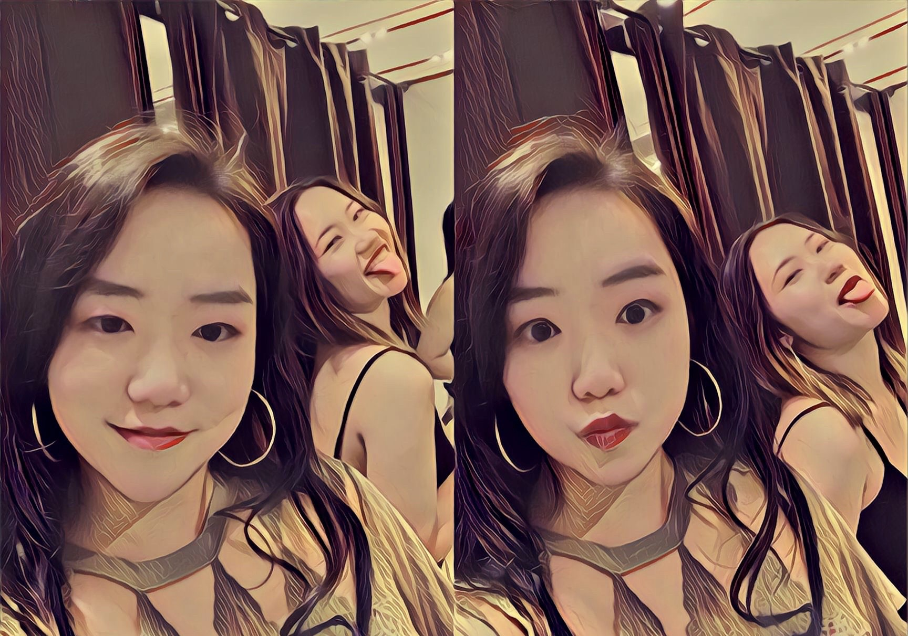
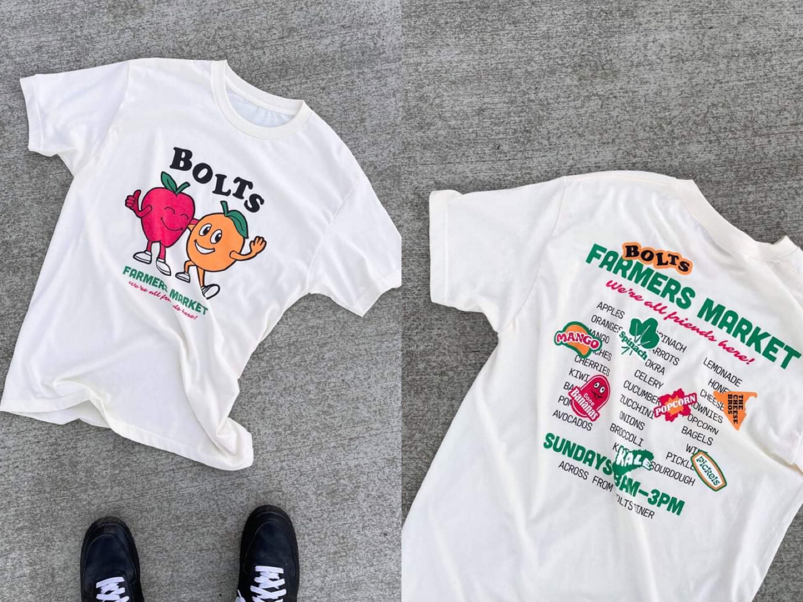

Game UX Design
Feb 23, 2021
After reading the article “Game Design UX Best Practices” written by Amir Dori, I feel understood more about how to design a better UX. The first tip that I find really helpful but was easier to be ignored in daily life is that most players are right-handed, so we should divide the screen into the comfort-to-reach area and hard-to-reach area while designing. In addition, pop-up is also an important component of a game design that needs to consider about. The tips of use animation and transparent background are something important for the users, and having the button “X” also increases the possibility that users won’t read the content at all. Therefore, we should use elements to replace them. These advices from Amir are tiny and simple, but really easy to be ignored. However, paying attention to this detailed part is the job for a good UI/UX designer to do.
Visual Thinking Between Peers
Feb 11, 2021
This image(Fig.1) is interesting because it shows the fun time of me and my friend together. We made weird faces while taking the photos while in the fitting room together. It relates to the topic because it shows the time that I had the specific earring, and it also represents our friendship. This collection of showing my earrings and stories behind it tell that I am the person likes to record the moment of my life and look back on it in the future.

Fig.1 - Grace with her friend Alina, 2019
This image(Fig.2) is about the T-shirt that Darren designed for Farmers Market that is really creative and iconic. The most interesting aspect of this image is how the logo is designed for this t-shirt, and we can clearly see all the important information from this t-shirt about the event. The most mysterious part is how the picture is taken that I think Darren will be improved further for this assignment.

Fig.2 - Darren's T-shirt design, 2020
Intriguing Photographs
Feb 04, 2021
In “10 Intriguing Photographs to Teach Close Reading and Visual Thinking Skills”, Michael Gonchar selected 10 photos that successfully caught the attention of students’ and teachers’ from The Times. He used these photos to analyze why these photos are attractive rather than others, and the main reason that concluded is because a good photo will make audiences think about “What’s going on in this picture”, “What do you see that makes you say that” and “What more can you find”. People usually want to know the details about these photos, and it closely connects to the topic.

WEFLOWdevelops a great interaction between images and texts while scrolling through the pages. The website starts with a background image of a woman looking up the sky and stretching her leg in the forest. This image makes me think about what is it trying to say, and it successfully represents the main idea of this website.
Modal Window
Jan 28, 2021
After reading “Best Practices for Modals / Overlays / Dialog Windows” by Naema Baskanderi, I understood more about how and when to use a Modal Window while making a website. The main purposes of Modal Window are trying to get user attention and input, and show additional information with or without context. I think the important part of a Modal Window is having the correct size that is friendly for users to use, which is not too small nor too big that gives a hard time for the users to find out how to put their information in. Even though modal windows might not be favored by users while they see it since it is always asking personal information, it is necessary for a company or shopping website to have for economic purposes. Therefore, as designers, it is important for us to create a user-friendly modal window.
After reading the article, I learned what to be extra careful when it comes to design a user interface and integrated it into my web development project. When it comes to getting user information, the user interface might easily be redundant, for example, providing heavy tasks for users to complete. However, the input area should be as brief and specific as possible to shorten the time for the user and maximize efficiency. What’s more, the content design of the web should be consistent as well, and good practice is to avoid making the web page into a newspaper, but visually relaxing and clear design by taking the advantage of the one-column design.
Another thing I learned after reading the article is that the design of a web page should always emphasize efficiency and user friendly, this refers that the fields should be noted concisely regarding their purposes, and their functionality: like giving hints to users about what is required and what isn’t, give a clear and explanation about what user is supposed to do in order to reach certain purposes, using color, labels, place holder, etc. All in all, the design should be intuitive and visually relaxing, and efficient in helping users reach their purpose in no time. All of these should be the foundation of design forms.